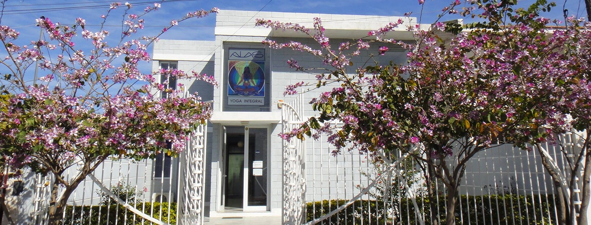
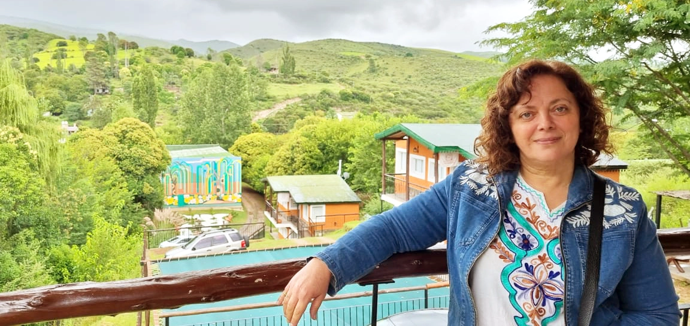

Diamante de Luz es un espacio al que Mónic Atrib dio inicio en el 2017 para ofrecer diferentes servicios de terapias holisticas: Reiki, Ho'oponopono, Lectura de Registros Akáshicos y posteriormente Constelaciones Familiares, a través de sesiones individuales, cómo también en diferentes talleres e iniciaciones.
Entendía que era y es muy valioso para las personas despertar esa luz que llevamos dentro. Cada uno es un diamante que brilla con luz propia.

Mónica Atrib
Desde los 19 años es docente. Ha trabajado en el nivel inicial y el nivel superior. Siempre sentió la necesidad de enriquecer su parte espiritual.
Hubo dos eventos que hicieron un click en su vida y la movilizaron a buscar información y posteriormente a formarse en las terapias holísticas. La primera fue participar en un taller de Ho'oponopono y lo que esa técnica hawaiana va produciendo; y la segunda, experimentar un alivio después de una sesión de reiki por un dolor muy agudo que llevaba quince días sin calmar con los medicamentos.
Ambas produjeron en Mónica mucho interés en sanar y en aprender más para brindar a los otros los beneficios de esas técnicas y/o terapias. Ese fue el inicio, y un antes y un después en su vida.

Siempre estuvo en la búsqueda de crecer espiritualmente al servicio de la vida. Luego aprendió a leer en simisma y posteriormente en los demás, los Registros Akáshicos, llegando al nivel de Facilitador.
Hizo maestrías en Reiki Kundalini, Crisalys, Egipcio y Usui. Brindó talleres de Ho'oponopono, realizó estas técnicas al servicio de las personas que lo necesitaban y que lo requerían. También inició a otros en Reiki Usui y en Lectura de Registros Akáshicos.
"Fueron vivencias muy ricas en mi proceso de sanación. Luego tuve la gran oportunidad de formarme en Constelaciones familiares. Con ese método la sanación vivida y la que aún experimento fue la más visible en mi vida y siento que es el camino más corto para sanar."
"Cada día me maravillo de lo que va produciendo en mí y en las personas que lo experimentan. Es una herramienta valiosísima al servicio de la vida. Desde el 2018 lo puse en práctica en sesiones de Constelaciones fliares individuales.
Me jubilé de mi función docente después de 38 años de ejercicio el 1° de diciembre de 2021. En los años de pandemia seguí ofreciendo mi servicio en Constelaciones Familiares individuales de manera virtual como así también, seguí profundizando mis conocimientos y experiencias de la sanación en mí y a través mis de mis hijos y nieta. En este año 2022, comencé a realizar Constelaciones familiares grupales y a dar formación a posibles nuevos consteladores familiares. La vida es un permanente aprendizaje. Doy infinitas gracias a todo, así como fue y así como es."